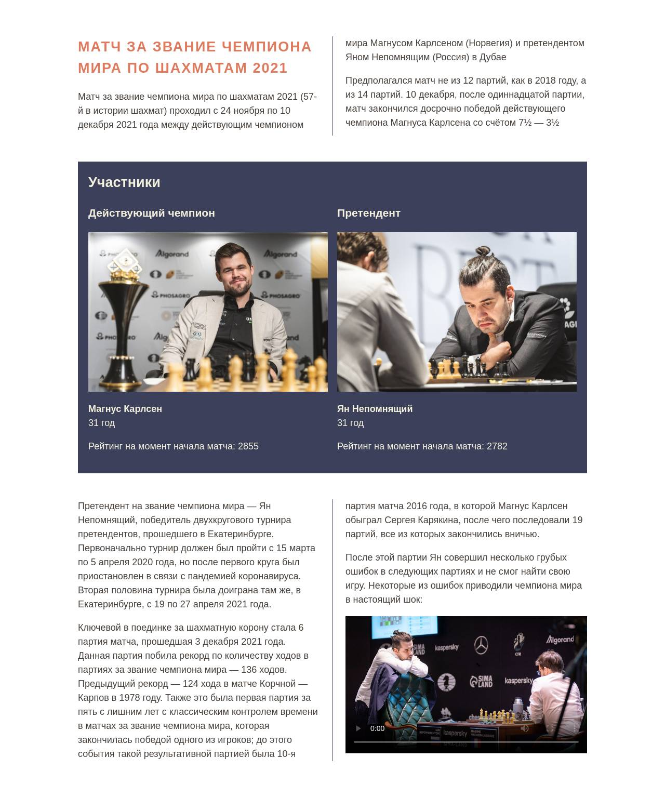

В этом задании мы снова вернёмся к шахматной тематике, но теперь узнаем о матче, прошедшем в 2021 году между чемпионом Магнусом Карлсеном и Яном Непомнящим. В этот раз уже готовы все необходимые стили, а ваша задача — добавить блоки с претендентами и вставить видео в конце текстовой части обзора

index.html
Добавьте два блока для описания играющих шахматистов. Структура полностью совпадает с той, что была в задании про колонки:
- Статус: Действующий чемпион или Претендент
- Фотография
- Имя
- Возраст
- Рейтинг на момент начала матча
Магнус Карлсен
- Статус: Действующий чемпион
- Фотография: ./media/images/magnus.jpg
- Возраст: 31 год
- Рейтинг на момент начала матча: 2855
Ян Непомнящий
- Статус: Претендент
- Фотография: ./media/images/nepomniachtchi.jpg
- Возраст: 31 год
- Рейтинг на момент начала матча: 2782
Блок с участником имеет следующие классы и теги:
- Для блоков описания используется общий класс member и внутри каждого:
- Заголовок третьего уровня со статусом
- Изображение
- Параграф с именем. Используйте класс member-name
- Параграф с возрастом
- Параграф с рейтингом
Видео
- В конце добавьте видео, которое находится по пути: ./media/video/magnus-after-mistake.mp4
- Добавьте к нему класс w-100 — это поможет задать правильные размеры для видео, чтобы оно не выходило за рамки колонки.
- У видео должны быть доступны элементы управления.
- Добавьте превью к видео. Для этого используйте изображение по адресу ./media/images/poster.jpg